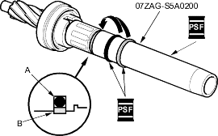
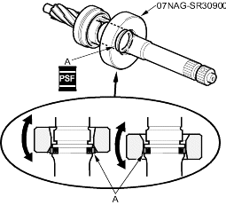
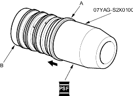
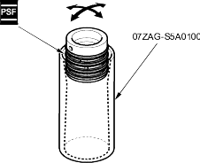

- Install the special tool over the pinion, and coat the surface of the tool with the power steering fluid. Slip the new O-ring (A) and new valve seal ring (B) over the special tool and expand them.

- Fit the O-ring and in the groove of the pinion shaft. Then slide the valve seal ring over the shaft and in the groove on the pinion shaft.
- Remove the special tool, and apply power steering fluid to the surface of the valve seal ring (A).

- Apply power steering fluid to the inside of the special tool. Set the larger diameter end of the special tool over the valve seal ring, and move the special tool up and down several times to make the valve seal ring fit in the pinion shaft groove.
- Remove the special tool, turn it over, slide the smaller diameter end over the valve seal ring. Move it up and down several times to make the valve seal ring fit snugly in the pinion shaft groove.
- Apply power steering fluid to the surface of the special tool. Slip two new seal rings (A) over the special tool from the smaller diameter end and expand them. Install only two rings at a time from each end of the pinion shaft sleeve (B).
Note these items when installing the seal ring:
- Do not over-expand the seal ring. Install the resin seal rings with care so as not to damage them. After installation, be sure to contract the seal rings using the special tool (sizing tool).
- There are two types of sleeve seal rings: black and brown. Do not mix the different types of rings as they are not compatible.

- Align the special tool with each groove in the sleeve, and slide a sleeve seal ring into each groove. After installation, compress the seal rings with your fingers temporarily.
- Apply power steering fluid to the seal rings on the sleeve, and to the entire inside surface of the special tool, then slowly insert the sleeve into the special tool.

- Move the sleeve back and forth several times to make the seal rings snugly fit in the sleeve. Be sure that the seal rings are not twisted.